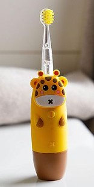
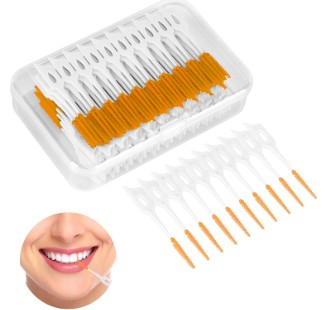

Cepillos Manuales
Los cepillos manuales son los más tradicionales. Ideales para quienes prefieren un control total sobre la presión y el movimiento al cepillarse
Cepillos Eléctricos
Los cepillos eléctricos son una excelente opción para quienes buscan una limpieza más profunda. Ayudan a eliminar más placa con menor esfuerzo.
Cepillos Interdentales
Los cepillos interdentales están diseñados para limpiar entre los dientes. Son especialmente útiles para personas con ortodoncia o espacios amplios entre los dientes.